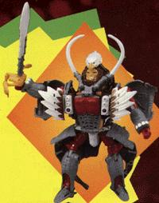

Difficulty of Transformation from Beast to Robot : Medium
Difficulty of Transformation from Beast to Magnaboss part : Hard
Color Scheme : White, gray, and red-orange, with some neon green
Individual Rating : 5.8
Allegiance
: Maximal
Size
: Ultra (when combined)
Overall Rating
: 6.6
 Ironhide
Ironhide
Difficulty of Transformation from Beast
to Robot
: Medium
Difficulty of Transformation from Beast
to Magnaboss part
: Hard
Color Scheme
: White, gray, and red-orange,
with some neon green
Individual Rating
: 5.8
Beast mode is an elephant.
This is a very nicely crafted mode, and he has small guns behind his ears
which can act as weapons in beast mode. Unless you look at him from the
bottom, theres no obvious clue this elephants a robot in disguise. The
articulation is also pretty good, as his ears, legs, and tail can all move.
His robot mode is EXTREMELY
poor and has a lot of extras; in fact, most of his body IS extras!!! The
extras always get in the way, and there is no place to put them. His very
long hands can become claws (only one part of the claws moves, though)
and his feet are short, stubby elephant feet, while his head sticks out
from his neck, making him look like a hunchback. His chest is also hard
to line up right with his head.
Forms arms, legs, and
chestplate of Magnaboss.
A very poor robot mode,
but an excellent beast mode.
 Prowl
Prowl
Difficulty of Transformation fron Beast
to Robot mode
: Very Hard
Difficulty of Transformation from Beast
to Magnaboss part
: Very Hard
Color Scheme
: Brown and yellow,
with some silver and red
Individual Rating
: 6.0
Beast mode is a lion.
His legs are so thin they look like hes starved that part of his body
and none of the other parts. His hind quarters also look rather odd, as
they become his weapon in robot mode. Other than that, hes kind of nice
looking, with a large mane(sometimes the two halves dont always stick
together) and a fierce face with nice detailing.
Robot mode is okay.
His back lion legs fold out from his robot legs, so his robot feet look
awkward. His front lion legs fold back from his robot arms, but they dont
get in the way. His lion tail becomes a large claw weapon, and his mane
fold out to look like hang glider wings. His chest part also comes apart
sometimes, as there's a lot stuffed in there. Transformation is extremely
hard, and only recommended for experienced transformers.
Forms chest and head
for Magnaboss.
A nice transformer,
although beast mode is a little weak.
 Silverbolt
Silverbolt

Difficulty of Transformation from Beast
to Robot
: Medium
Difficulty of Transformation from Beast
to Magnaboss part
: Medium
Color Scheme
: Brown and white, with
a little bit of yellow and black
Rating
: 6.7
*2018 UPDATE/BUYER BEWARE: After several years, the brown plastic on Silverbolt has shown reports of moderate-to-severe Gold Plastic Syndrome (crumbling). Be aware of this when purchasing this toy.*
Beast mode is a bald
eagle. One of the best beast modes in the original Beast Wars Transformers
line, with no obvious clue hes a robot except for his robot hands under
his tail feathers. His wingspan is impressive, about four times his body
width. The detailing in this mode is also superb too.
Robot mode is very nice,
but there is one big problem; his large wings in the back can make it hard
for him to stand up. You can fold them forward to become missle launchers,
but then it looks like he's wrapping himself up in his wings, which looks
odd. He has two extremely large white jagged swords, making him look like
a slice-and-dice kind of guy. The eagle head pops out over his robot head.
I'm not sure what to think about this, since it complements the robot mode
just as much as it subtracts from it. His feet also look a bit odd, since
they are his eagle feet turned backwards.
Forms the upper back
and missle launchers of Magnaboss.
A very nice transformer;
it is the only one of the group that could probably be sold alone and still
be popular.
 Magnaboss
Magnaboss

Difficulty of Transformation
: Very
Hard
Color Scheme
: Yellow, brown, gray,
orange-red, and some silver, dark blue, black, neon green, and white
Individual Rating
: 8.0
Robot mode(the only one
he has) is a combination of Silverbolt(the eagle), Ironhide, and Prowl,
all sold together. He looks like a robot version of Conan the Barbarian
with lots of hair on his face. He has some extras on his arms and legs,
but these dont get in the way as much as they do on Ironhide, even though
they do look odd. He has a large sword, composed of all three of his component
transformers' weapons, and he has two missile launchers on his chest from
Silverbolt. The articulation in this mode is excellent, the only major
part of his body not being able to move is his head.
A very nice robot and
highly recommended, although hard to transform.
Reviews by Beastbot